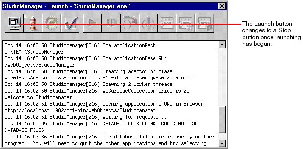

For the procedures for the last two alternatives, check Serving WebObjects . You can launch the server application from Project Builder using the Launch panel.
Click the Launch button on the main window.
Click the Launch button on the Launch panel
After starting the server application, start the client application; there are several ways to do this:
There are a few considerations to keep in mind when running a Java Client WebObjects application:
- Using the Java interpreter (java) : To start the client as a stand-alone Java application outside a browser, use the java interpreter. The syntax for using java to start a Java Client application is:
java [-classpath classpath]
com.apple.client.eointerface.EOApplication url
[pageName]You might want to create a script file to make this command automatic and hidden.
It might not be necessary to specify the -classpath option, but if the interpreter cannot find classes, you must either modify your CLASSPATH environment variable or add the -classpath option to the command. The url option is the application's URL that you would also use in a browser and pageName is the name of the page that contains the WOJavaClientApplet component. If pageName is not specified, "Main" is assumed.
Please note that "com.apple.client.eointerface.EOApplication" is the name of the class that contains the static main function that is usually used to start up a Java Client WebObjects application. If you have a different main function you must specify the name of the class that implements it instead.
- Using Microsoft Internet Explorer browsers
: To use your Java Client application in this browser, you must use version 4.0 or higher. To view the debugging output, launch Internet Explorer, choose Internet Options from the View menu, enable both Java Logging and Java Console in the Advanced options display, restart Internet Explorer, and select ViewJava Console. It is recommended that you use Sun's Java Plug-in with Internet Explorer because there are bugs in the browser's Java implementation such as known problems with combo boxes. In addition, if you start a new applet in a browser that has run another applet, the new applet freezes because the browser's Java virtual machine is not restarted. You will need to restart the browser every time you launch your application; quit the browser and then launch the client. This procedure is not necessary if you use Sun's Java Plug-in. If you wish, WebObjects can automatically launch the browser for you.
- Using Netscape browsers
: To run your Java Client application with a Netscape browser, you currently have to use Sun's Java Plug-in. If you wish, WebObjects can automatically launch the browser for you.
- Using appletviewer
: The JDK's appletviewer tool is very useful during development because it minimizes your start-up time by removing the need to launch a browser. It also lets you view the debugging output inside the shell where you run appletviewer . To use the tool, copy the URL of the server application (displayed in the console output) and paste it a shell window as the argument, for example:
appletviewer http:// <host> :1234/WebObjects/MyAppIf you are running appletviewer on the same machine as the WebObjects application, <host> is "localhost"; otherwise it is the host name of the machine on which the application is running.
- You can specify -WOAutoOpenInBrowser NO on the command line to avoid auto-launching a browser when you start up your server application.
- The CLASSPATH environment variable must be correctly set so your application can find all necessary Java classes. If classes cannot be found, you should modify your CLASSPATH. The installer should correctly configure the CLASSPATH.
- If you run the application in a Microsoft Internet Explorer or Netscape browser, you may have to use Sun's Java Plug-in. These browsers currently do not implement the AWT specification exactly or have bugs that prevent Java Client applications from working correctly. In particular, Microsoft Internet Explorer does not reset the Java virtual machine which can cause the application to freeze. To use the plug-in, open the Web component containing your application's WOJavaClientApplet in WebObjectsBuilder and set the useJavaPlugin binding to YES. The first time you start an application using the plug-in, the browser will ask you to download the plug-in (the concrete behavior depends on the browser). Afterwards, the plug-in is loaded automatically. Please refer to Sun's documentation at http://java.sun.com/products for more information.
© 1999 Apple Computer, Inc.